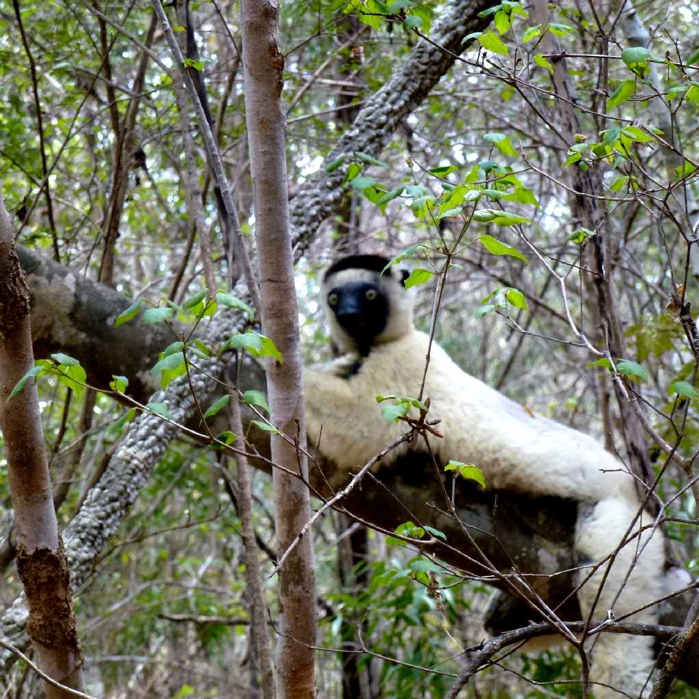
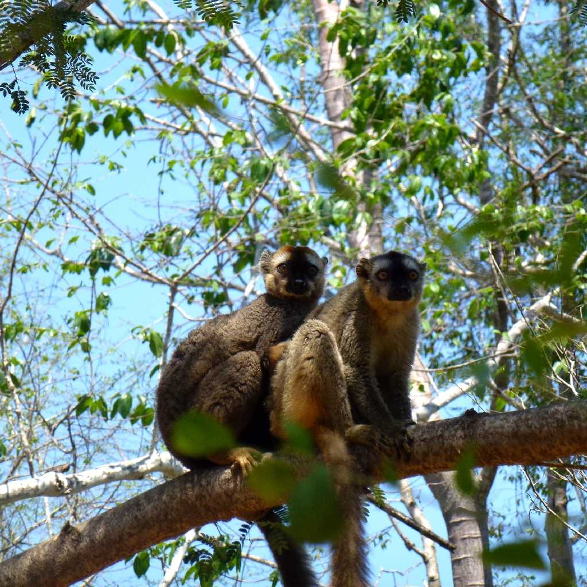
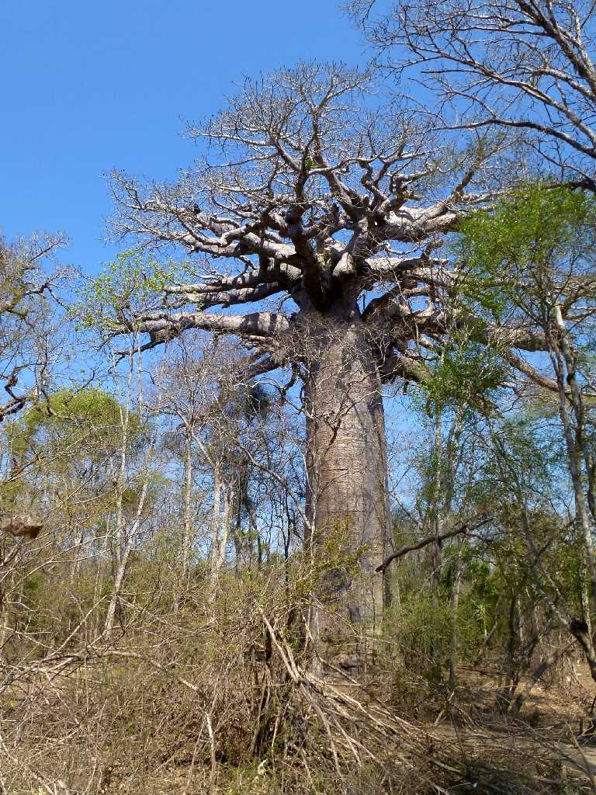

Verreaux's Sifaka Kirindy Forest
キリンディ森林保護区にいるマダガスカルの固有種ベローシファカ キツネザル下目は原猿類に属するマダガスカルのみに生息する固有種 哺乳類猿目キツネザル下目インドリ科シファカ属

Red-fronted Brown Lemur Kirindy Forest
マダガスカルの固有種アカビタイチャイロキツネザルも撮影に成功 哺乳類猿目キツネザル下目キツネザル科キツネザル属

Baobab Kirindy Forest
キリンディ森林保護区内で最も大きなバオバブで聖なるバオバブと云われ樹齢約５００年